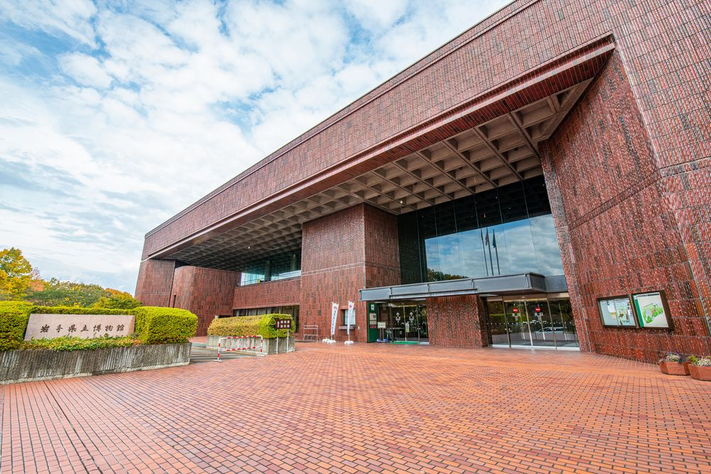

岩手県立博物館は、岩手県盛岡市にある博物館。1980年に盛岡市制百年を記念して開館した。
盛岡駅より北東7キロとやや辺鄙な場所にあるが、晴れた日には2階のグランドホールから
美しい岩手山が望める。
所在地 - 〒020-0102 岩手県盛岡市上田字松屋敷34
受賞歴 - 第2回東北建築賞、第9回日本建築家協会25年賞

岩手県立博物館は、岩手県盛岡市にある博物館。1980年に盛岡市制百年を記念して開館した。
盛岡駅より北東7キロとやや辺鄙な場所にあるが、晴れた日には2階のグランドホールから
美しい岩手山が望める。
所在地 - 〒020-0102 岩手県盛岡市上田字松屋敷34
受賞歴 - 第2回東北建築賞、第9回日本建築家協会25年賞
2014年、同館の調査により、当時の学芸課長によって、2001年から同館に預けら
れていた県内の自治体等が所有する発掘品等200点が、事前に連絡もなく、サン
プリング調査のため、一部分勝手に切り取られ、勝手に樹脂で埋め合わせされて
いたことが発覚、2016年に当該課長は30点余りについて、文書で訓告処分を受けた。この事件は切り取られた形から「Wの悲劇」と呼ばれている。